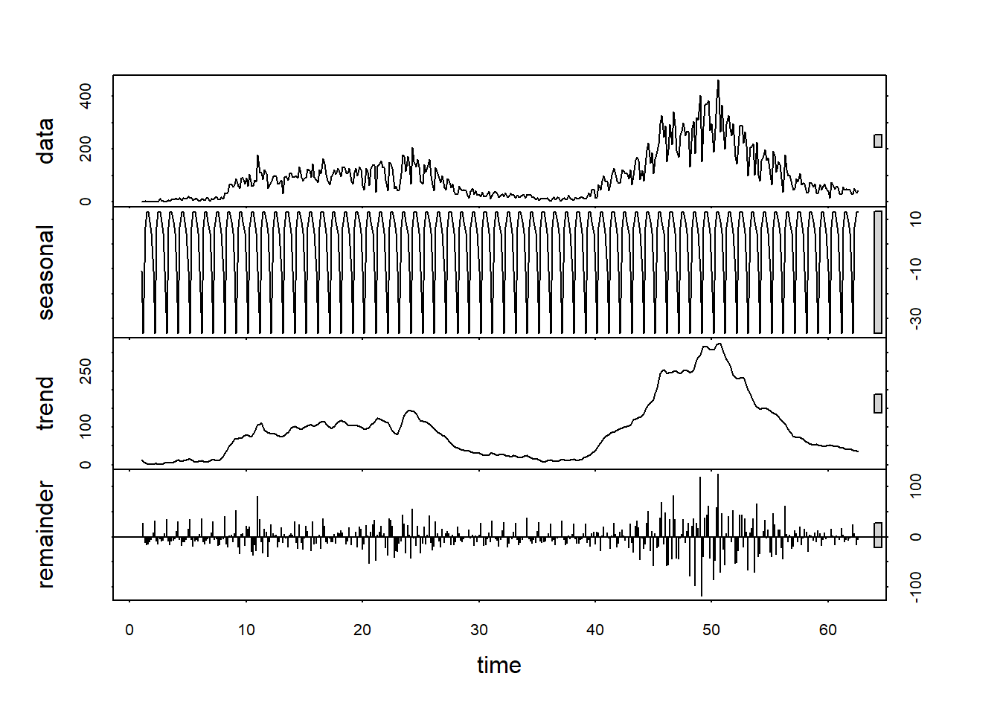

# Import des packages nécessaires
library(forecast)
library(ggplot2)
library(tseries)
library(tidyr)
# Import des données
data <- read.csv("base_covid19.csv", header=TRUE, sep=";")
# Création de la série temporelle
cas_ts <- ts(data$CasPositif, frequency=7)Analyse des cas COVID-19 au Sénégal
Importation et préparation des données
Décomposition et analyse de la tendance
# Décomposition STL
decomposition <- stl(cas_ts, s.window="periodic")
plot(decomposition)
Interprétation
La décomposition STL de la série temporelle permet d’analyser trois composantes principales :
Tendance : La tendance représente la direction générale de l’évolution des cas positifs. Elle montre une montée et une baisse au fil du temps, permettant d’identifier les phases critiques de la pandémie.
Saisonnalité : La saisonnalité détecte des fluctuations répétitives hebdomadaires, probablement liées à des variations des tests effectués selon les jours de la semaine (moins de tests le week-end, par exemple).
Résidus : Les résidus représentent les variations non expliquées par la tendance et la saisonnalité. Ils devraient idéalement être aléatoires (bruit blanc), mais des résidus importants peuvent indiquer des événements imprévus ou des changements de comportement non capturés par les autres composantes.
Moyenne mobile et tendance linéaire
# Calcul de la moyenne mobile
mm_7 <- ma(cas_ts, order=7)
# Visualisation avec moyenne mobile
plot(cas_ts, main="Cas Positifs avec Moyenne Mobile",
ylab="Nombre de cas", xlab="Temps")
lines(mm_7, col="red", lwd=2)
# Ajout de la tendance linéaire
temps <- 1:length(cas_ts)
modele_lineaire <- lm(as.vector(cas_ts) ~ temps)
lines(temps, predict(modele_lineaire), col="blue", lwd=2)
legend("topleft", legend=c("Données brutes", "Moyenne mobile", "Tendance linéaire"),
col=c("black", "red", "blue"), lty=1)
Interprétation
La courbe de la moyenne mobile sur 7 jours lisse les fluctuations quotidiennes et montre une tendance plus claire. Elle permet d’observer l’évolution générale des cas positifs sans être perturbé par les variations brusques quotidiennes. On voit ici que, malgré les fluctuations journalières, la tendance générale peut être identifiée à travers cette moyenne mobile.
Résumé du modèle linéaire
summary(modele_lineaire)
Call:
lm(formula = as.vector(cas_ts) ~ temps)
Residuals:
Min 1Q Median 3Q Max
-131.52 -62.58 -18.63 44.86 333.43
Coefficients:
Estimate Std. Error t value Pr(>|t|)
(Intercept) 35.32122 7.71124 4.580 6.08e-06 ***
temps 0.26795 0.03086 8.682 < 2e-16 ***
---
Signif. codes: 0 '***' 0.001 '**' 0.01 '*' 0.05 '.' 0.1 ' ' 1
Residual standard error: 80 on 430 degrees of freedom
Multiple R-squared: 0.1491, Adjusted R-squared: 0.1472
F-statistic: 75.37 on 1 and 430 DF, p-value: < 2.2e-16Interprétation
Le modèle linéaire ajouté à la série montre une approximation globale de la tendance des cas positifs. Ce modèle est une simplification et peut ne pas capturer les détails des variations saisonnières ou des résidus, mais il donne une idée générale de la montée ou de la descente des cas sur l’ensemble de la période.
Modélisation Box-Jenkins
Tests de stationnarité
# Test sur série originale
adf_test <- adf.test(cas_ts)
print("Test ADF sur série originale :")[1] "Test ADF sur série originale :"print(adf_test)
Augmented Dickey-Fuller Test
data: cas_ts
Dickey-Fuller = -0.70951, Lag order = 7, p-value = 0.9694
alternative hypothesis: stationary# Test sur série différenciée
cas_diff <- diff(cas_ts)
adf_test_diff <- adf.test(cas_diff)Warning in adf.test(cas_diff): p-value smaller than printed p-valueprint("Test ADF sur série différenciée :")[1] "Test ADF sur série différenciée :"print(adf_test_diff)
Augmented Dickey-Fuller Test
data: cas_diff
Dickey-Fuller = -9.0383, Lag order = 7, p-value = 0.01
alternative hypothesis: stationaryAnalyse ACF et PACF
par(mfrow=c(2,1))
par(mar=c(4,4,2,2))
acf(cas_diff, main="ACF des différences premières")
pacf(cas_diff, main="PACF des différences premières")Interprétation
Les fonctions d’autocorrélation (ACF) et d’autocorrélation partielle (PACF) permettent de déterminer les paramètres ppp et qqq du modèle ARIMA. Elles montrent les corrélations des données avec elles-mêmes à différents lags (décalages), aidant à comprendre si la série suit un modèle autoregressif (AR) ou un modèle de moyenne mobile (MA)
Modélisation ARIMA
modele_auto <- auto.arima(cas_diff, seasonal=TRUE)
summary(modele_auto)Series: cas_diff
ARIMA(0,0,1)(1,0,1)[7] with zero mean
Coefficients:
ma1 sar1 sma1
-0.7391 0.8982 -0.6020
s.e. 0.0321 0.0284 0.0529
sigma^2 = 962.1: log likelihood = -2092.59
AIC=4193.18 AICc=4193.27 BIC=4209.44
Training set error measures:
ME RMSE MAE MPE MAPE MASE ACF1
Training set -0.05961689 30.90945 20.50475 NaN Inf 0.6203363 -0.006537767Prévisions
Prévisions ARIMA
# Prévisions ARIMA
prev_arima <- forecast(modele_auto, h=30)
plot(prev_arima, main="Prévisions ARIMA sur 30 jours",
xlab="Temps", ylab="Nombre de cas positifs")
Prévisions ETS et comparaison
# Modèle ETS
modele_ets <- ets(cas_ts)
prev_ets <- forecast(modele_ets, h=30)
# Préparation des données pour la comparaison
df_comparaison <- data.frame(
Date = 1:30,
ARIMA = as.numeric(prev_arima$mean),
ETS = as.numeric(prev_ets$mean)
)
df_long <- pivot_longer(df_comparaison,
cols = c("ARIMA", "ETS"),
names_to = "Methode",
values_to = "Prevision")
# Visualisation comparative
ggplot(df_long, aes(x = Date, y = Prevision, color = Methode)) +
geom_line() +
labs(title = "Comparaison des prévisions ARIMA et ETS",
x = "Jours de prévision",
y = "Nombre de cas positifs") +
theme_minimal()Évaluation de la précision des modèles
print("Précision du modèle ARIMA :")[1] "Précision du modèle ARIMA :"accuracy(prev_arima) ME RMSE MAE MPE MAPE MASE ACF1
Training set -0.05961689 30.90945 20.50475 NaN Inf 0.6203363 -0.006537767print("Précision du modèle ETS :")[1] "Précision du modèle ETS :"accuracy(prev_ets) ME RMSE MAE MPE MAPE MASE ACF1
Training set 0.2317715 31.35175 21.72128 NaN Inf 0.8129221 0.03148064